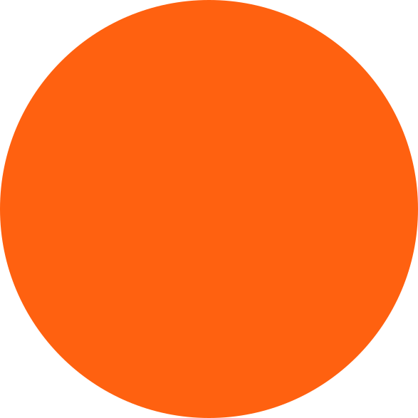
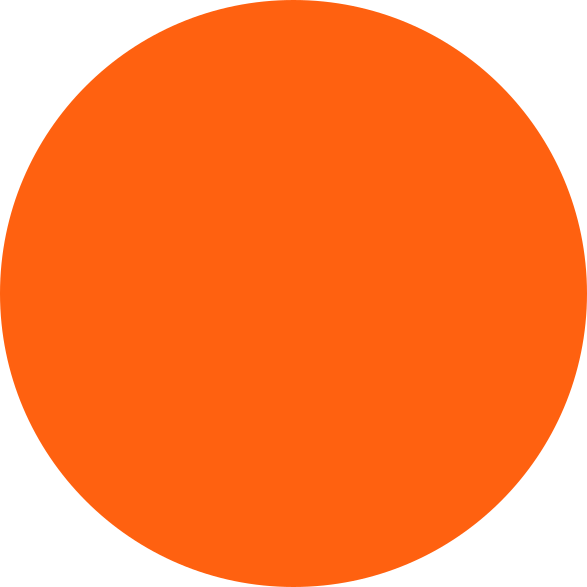

Hi, leuk dat je een kijkje neemt!
Ik ben Janou Verdellen en studeer aan de hogeschool Zuyd Maastricht Institute of Arts. Momenteel zit ik in het tweede jaar van de opleiding Communication and Multimedia Design. Ik heb een grote interesse in maatschappelijke problemen en met name de zorg. Met mijn kritische blik op de wereld en mijn kwaliteiten in creatieve concepten maken los ik deze vraagstukken graag op. Ook ben ik graag creatief bezig en zal ik zorgen voor mooie eindproducten.
 
